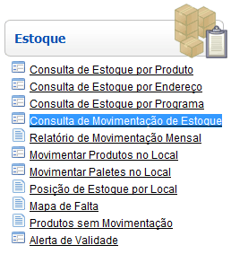
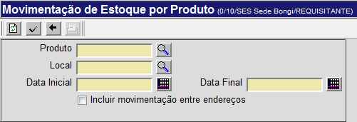

Movimentação de Estoque por Produto [ Voltar ]Este formulário permite a geração de um relatório contendo todas as movimentações em um determinado local e período. Na lista de resultados, são exibidos dados como o tipo, origem e destino da movimentação, assim como data, hora, lote, etc. Este formulário se encontra dentro do menu "Estoque". 
Ao clicar no menu, a seguinte tela será exibida: 
Execute os seguintes passos para gerar o relatório: 1º Passo: especifique o produto para o
qual deseja ver as movimentações. Clique no botão 2º Passo: informe o local onde a consulta
deve ser realizada. Clique no botão 3° Passo: informe o período para a
consulta. Utilize o botão Dicas para
preenchimento dos campos de data:
Exemplo: se a data
atual é 20/10/2010,
digite "+10"
e pressione a tecla "Enter" para que o sistema retorne o dia 30/10/2010
4° Passo: se desejar, marque a opção "Incluir movimentação entre endereços" para retornar movimentações internas. 3º Passo: clique no botão para gerar o relatório. para gerar o relatório.
4º Passo: se desejar, clique no botão  para visualizar a
tela de impressão do relatório. Em seguida, clique no botão para visualizar a
tela de impressão do relatório. Em seguida, clique no botão  [Imprimir] do navegador
para iniciar a impressão. [Imprimir] do navegador
para iniciar a impressão. |
 [Procurar] ao lado do
campo "
[Procurar] ao lado do
campo " [Data] situado ao lado dos
campos "
[Data] situado ao lado dos
campos "